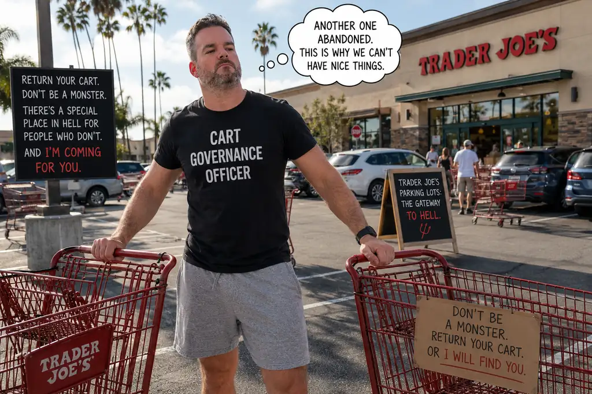

Last week, I came for the people who don’t return their TSA trays. This week, I’m escalating, because I want to talk about shopping carts. Specifically, I want to talk about the people who finish loading their groceries into the car, look directly at the cart return approximately 14 feet away, and then make the conscious decision to abandon their cart beside someone else’s parked car like they are disposing of evidence after a crime. There is a special place in hell for you, and I’m coming for you.
I realize this is a disproportionate emotional response to a fairly minor breach of social etiquette. I have many actual problems in my life, and yet somehow watching someone abandon a shopping cart can take me from perfectly content to internally prosecuting a case against their entire moral character in under three seconds. I don't know what this says about me, but at 40 years old I think we're past the point where this particular personality trait is going anywhere.
There is a brilliant Malcolm in the Middle episode where a dispute in a grocery-store parking lot escalates until Lois and another woman are basically at war, eventually ramming their cars into each other. I remember watching it and thinking that this was supposed to be an exaggerated sitcom scenario. As an adult, I now watch it and think: yes. I understand how we got here. I’m not saying I would ram someone’s car over an abandoned shopping cart. I’m simply saying that I understand the sequence of events that might lead a person to that decision.
And if this is happening in a Trader Joe’s parking lot, all bets are off.
Trader Joe’s is one of my favorite places on earth, but its parking lots appear to have been designed by someone conducting a behavioral experiment on human rage. The spaces are tiny, there are seventeen cars attempting to reverse simultaneously, somebody in a Subaru is waiting six minutes for a space occupied by a person who has not even started loading their groceries yet, and a pedestrian carrying one tiny paper bag has decided that the exact center of the driving lane is the ideal place to stop and check their phone.
Trader Joe’s parking lots are the gateway to hell.
So when I finally survive that experience, secure my parking space, navigate the store, buy seventeen things I absolutely did not go in for, make it safely back to my car and then see someone abandon their cart six feet from the cart return, I experience something approaching a spiritual crisis.
Because the shopping cart is one of the purest tests of character we have. There is no law requiring you to return it. There is usually no employee standing there watching you. There is no performance review, bonus or public recognition attached to the task. Nobody is going to update your LinkedIn profile to recognize your “demonstrated excellence in cart stewardship.” You return it because it is the decent thing to do, because you used a shared thing and understand that somebody else should not have to clean up after you.
That’s basically the entire test, and I think it tells you an alarming amount about a person.
The Functional Members of Society
The first group unloads their groceries, closes the trunk and returns the cart. Efficient. Civilized. Thoughtful. They understand something very basic about participating in a society: I used this thing, I am finished with this thing, and now I should put it back where it belongs. Revolutionary stuff.
These are my people. I trust them. I would trust them with a deadline. I would probably trust them with confidential information. I might even put them on a succession plan, although let's not get carried away because returning a shopping cart is still a fairly low bar for executive leadership.
But you've passed the first round.
The People I Have Serious Questions About
Then we have the people who push the cart onto a patch of grass, wedge it between two cars or position it vaguely near a curb as though proximity to the cart return counts as completion. My personal favorite is the person who moves the cart several feet out of the way, meaning they have already expended approximately the same amount of energy required to return it, but consciously choose a destination that inconveniences everyone else instead.
That’s when I start developing questions that extend well beyond the shopping cart. What does your shared drive look like? Do you leave dirty mugs in the office sink because “someone cleans those”? Do you walk out of a conference room leaving glasses, cables and half-dead whiteboard markers everywhere? Do you reply “sounds good” to an email chain containing 37 people? When the airplane lands, do you immediately stand up even though you're in row 31? I need to understand whether we are looking at an isolated cart incident or a broader pattern of antisocial behavior.
Because what you are really saying when you abandon the cart is: my part of this process is finished, therefore what happens next is somebody else's problem. You got what you needed. You loaded the car. You are leaving. The employee can deal with it. The next customer can deal with it. The person whose car the cart rolls into can deal with it. Society can deal with it.
This troubles me.
And Then, Unfortunately, There Is Me
Obviously, I return my cart, but unfortunately my involvement does not end there. On the way to the cart return I notice another abandoned cart, so I take that one too. Then I see a third one sitting halfway into a parking space, and suddenly I’m no longer grocery shopping. I have appointed myself Regional Vice President of Parking Lot Operations.
I begin nesting the carts properly. I rescue the one someone has abandoned on the grass. I move the cart blocking a parking space. If one has a bad wheel, I instinctively position it somewhere sensible as though the Trader Joe’s management team will later conduct a root-cause analysis and appreciate that I have segregated the defective asset. Nobody has asked me to do any of this.
Then, because apparently I learned absolutely nothing from my TSA tray experience, I look around to see whether anyone has noticed.
Not obviously. I have some dignity. I just conduct a subtle environmental scan to determine whether an employee, store manager or ideally someone from Trader Joe’s corporate leadership has witnessed my extraordinary contribution to parking-lot governance. I am not asking for a parade. A nod would be nice. Perhaps a quiet “thank you, sir.” If they wanted to put a small plaque beside the cart return recognizing my ongoing contribution, I wouldn't object.
Instead, nothing happens. Nobody cares. I have once again performed an entirely self-appointed act of operational excellence and received absolutely no recognition for it.
And unfortunately, this is where my completely irrational shopping-cart obsession starts to feel a lot like leadership.
The Real Test Is What You Do When Nobody Is Watching
A lot of leadership happens visibly. There are presentations, town halls, executive meetings, major decisions and moments when everyone is watching what you do. But I increasingly think culture is built in the much smaller moments when nobody particularly cares and there is no reward attached to doing the right thing.
Do you clean up the problem you created? Do you leave the process better than you found it? Do you follow through when there is no spotlight on the work? Do you fix the typo in the shared deck even though nobody will know it was you? Do you tell someone about a risk before it becomes your problem? Do you make sure the handoff actually happened rather than assuming somebody else will eventually figure it out?
In other words, do you return the metaphorical cart?
The people I trust most at work are often the people who do these small things consistently. They don't do them because someone senior is watching, because there is an award attached or because they expect to receive credit. They simply have an instinct for ownership, and ownership at its best is deeply unglamorous. It is closing the loop, tidying the handoff, sending the follow-up, correcting the data and making sure the thing that should happen actually happens.
Nobody applauds. You just put the cart back.
But the Cart-Return People Have a Problem Too
This is the part where I reluctantly have to turn the analysis back on myself, because the people who always return their own carts can develop another habit: we start returning everyone else's carts too.
Initially, this looks like exceptional leadership, and sometimes it is. You see something that needs doing and you do it. You don't wait for permission, you don't announce that it isn't your job, and you don't allow something important to fail because the ownership wasn't perfectly defined. Organizations need people like that, and those people tend to progress because they become known as the ones who can be relied upon to get things done.
The danger comes when helping turns into permanently cleaning up. If every time someone leaves something unfinished you quietly finish it, the organization learns a system. Not the system written in the operating model or the job descriptions, but the actual system: if something gets left behind long enough, Micheal will eventually deal with it.
If the deadline slips, Micheal will chase it. If the deck isn't good enough, Micheal will rewrite it. If the owner doesn't own it, Micheal will own it. If somebody leaves the metaphorical shopping cart in the middle of the organizational parking lot, Micheal will return it while making a very large sigh and secretly hoping somebody senior notices.
That isn't a sustainable leadership model. It is a remarkably efficient way to exhaust one person while teaching everyone else that abandoned carts magically disappear.
Good Leadership Is Not Permanent Cleanup
This is one of the harder lessons for high-ownership people because sometimes the fastest and easiest solution genuinely is to just do it yourself. You know you can fix the problem in ten minutes. Explaining it, coaching someone through it and allowing them to struggle may take an hour, and even then the final result may not be exactly how you would have done it.
But if you continually protect people from the consequences of poor ownership, you are not developing ownership. You are replacing it.
Sometimes the right leadership move is not to return their cart for them. Sometimes you have to point at it and say, “You left that there,” and then make them walk the 14 feet themselves. That can feel inefficient and deeply uncomfortable when your natural instinct is to fix the thing and move on, but developing people requires allowing them to develop the habit of ownership themselves.
Otherwise you don't have a high-performing team. You have one highly functioning person surrounded by people who have learned exactly where they can leave the carts.
Culture Is Mostly the Things Nobody Gets Rewarded For
We sometimes make organizational culture sound incredibly grand. We create values statements, leadership principles, offsites, presentations and beautifully designed posters explaining who we are supposed to be. Those things can matter, but culture is also the accumulation of thousands of tiny choices people make when there is no immediate reward attached.
Do you clean up after yourself? Do you help the next person? Do you take responsibility before someone asks? Do you leave unnecessary mess behind because technically somebody else owns it? Do you behave differently when the boss isn't watching?
The best organizations I have worked in weren't great simply because they employed smart people. They were great because enough people behaved as though the system belonged to them. They didn't routinely walk past problems because the problems sat outside their job descriptions, and they understood that ownership sometimes means doing small, boring, invisible things simply because those things need to be done.
But equally, the best leaders didn't spend their lives cleaning up every abandoned cart. They created teams where people learned to return their own.
That distinction matters.
My Completely Unscientific Shopping Cart Leadership Model
So my leadership model has evolved. Return your own cart. Don't leave your mess for somebody else. If you see someone who genuinely needs help, help them. If something important has fallen between the cracks and nobody owns it, step in. But don't build an identity around being the only person capable of cleaning everything up, because eventually you will resent everyone else for a job you quietly appointed yourself to do.
And when someone repeatedly abandons their cart, maybe stop returning it for them. Point it out. Set the expectation. Make them walk the 14 feet. Ownership is a habit, and so is avoiding it.
As for the actual grocery store, I will continue returning my cart and, realistically, probably several other people's carts. I will continue making a visible expression of disappointment when I see one abandoned beside a parking space, and I will continue hoping against all available evidence that one day a grocery-store employee will finally look at me and say, “Thank you. We've noticed your work.”
Until then, I remain unpaid, unrecognized and fully committed to cart governance.
And if you see an extremely tall Irish man in a Trader Joe's parking lot angrily collecting abandoned shopping carts while muttering to himself, give him some space. He has seen the Malcolm in the Middle episode. He knows how quickly these things can escalate.
There is a special place in hell for people who don't return their shopping carts.
And I'm still coming for you.